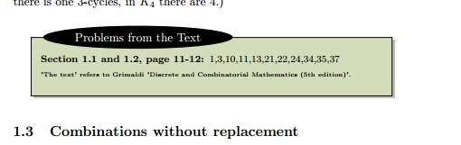

| Date | Material Covered | Quiz Coverage | Comments
| |
| | Sept 03 | Upto Problem 0.2 in Section 0.2 of notes | Homework is listed in the notes. Notes are frequently updated, and
homework problems are added/removed/clarified. Be sure to look at the most recent version. | Here are the notes we follow.
| | Sept 05 | Finished Chapter 0 of notes |
| | Sept 10 | Section 1.1 - 1.2 |
| | Sept 12 | Section 1.3 - 1.4 |
| | Sept 17 | Section 2.1 - 2.2 | Quiz on Problems from 1.1 and 1.2 of notes.
This includes problems from the Text that are listed in the notes like this:

| | Sept 19 | Section 2.2 - 2.3 | Did all of 2.3 but indirect proof.
| | Sept 24 | 2.3 - 2.4 | Quiz on 2.1 - 2.2.
| | Sep 26 | 3.1 - 3.2 |
| | Oct 01 | No Class | Chusok
| | Oct 03 | No Class | 개천절
| | Oct 09 | 3.4, 4.1 | Quiz on 2.3 - 2.4
| | Oct 10 | 4.2 |
| | Oct 15 | 5.2 | Quiz on 3.4 - 4.2
| | Oct 17 | 5.3 - 5.5 |
| | Oct 22 | No Class | Midterm Week
| | Oct 24 | Test on material upto and including 5.2 | Solutions
| | Oct 26 6pm - 8pm | Makeup Class | Sect 4.3, half of 4.4 (Not required)
| | Oct 29 | 5.7 | Quiz on 5.2, 5.3, 5.5
| | Oct 31 | 5.7, 8.1 |
| | Nov 05 | | No Class, made up on Oct 26.
| | Nov 07 | | No Class, made up on Oct 26.
| | Nov 12 | 8.3, most of 10.1 | Quiz on 5.7, 8.1
| | Nov 14 | Finished 10.1, most of 10.2 |
| | Nov 16 6pm - 8pm | Makeup Class . | Sect 4.4, 4.5 (Not Required)
| | Nov 19 | 10.2 | Quiz on 8.3, 10.1
| | Nov 21 | 10.3, 11.1 |
| | Nov 26 | 11.2 | Quiz on 10.2, 10.3, 11.1
| | Nov 28 | 11.3 |
| | Dec 03 | | No Class, made up on Nov 16.
| | Dec 05 | | No Class, made up on Nov 16.
| | Dec 12 (Wednesday) | Final on 5.3 - 11.3 | Solutions
|
|
|